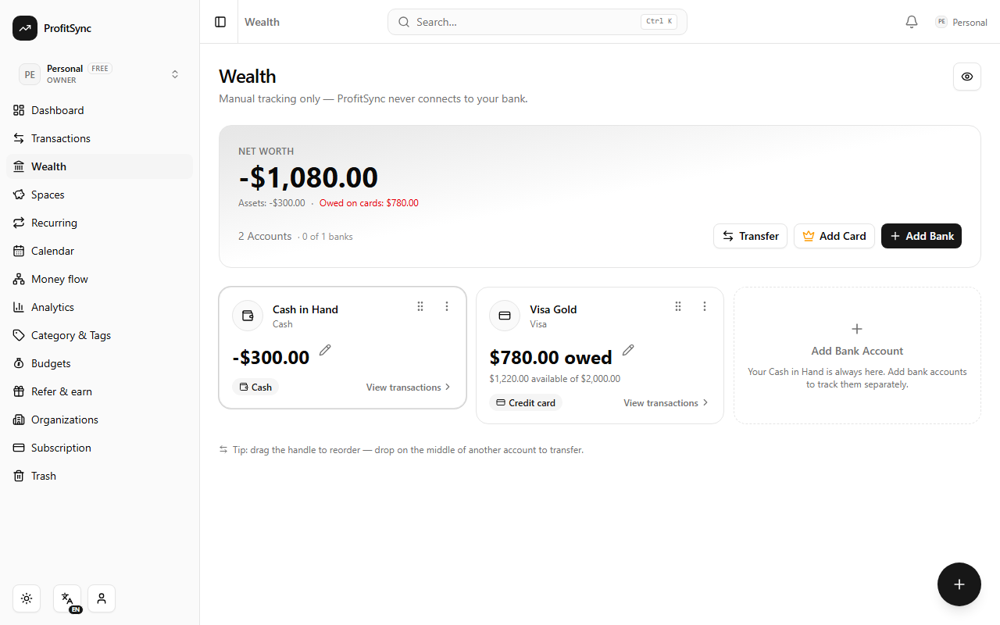
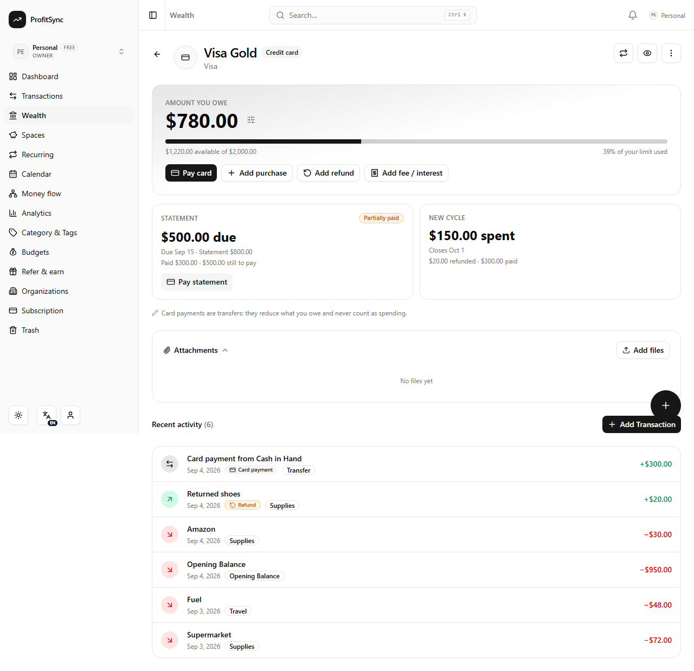
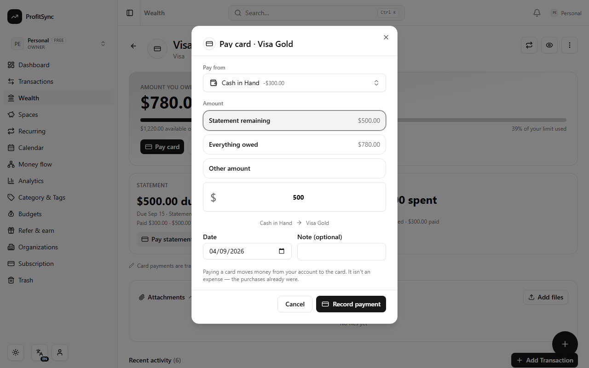
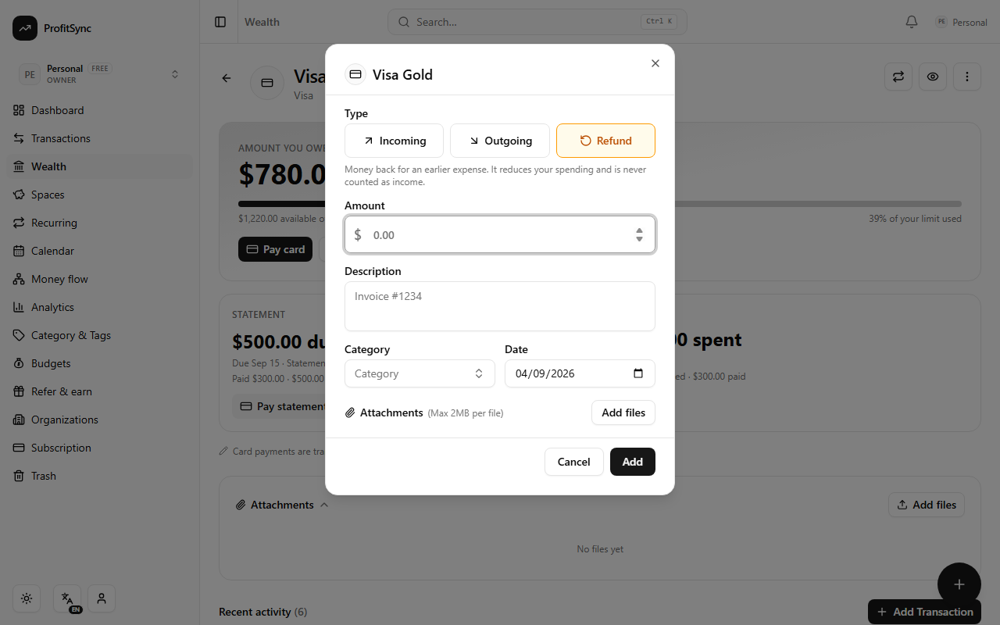
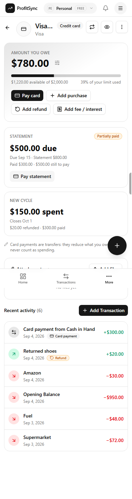
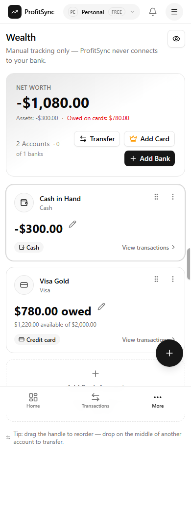
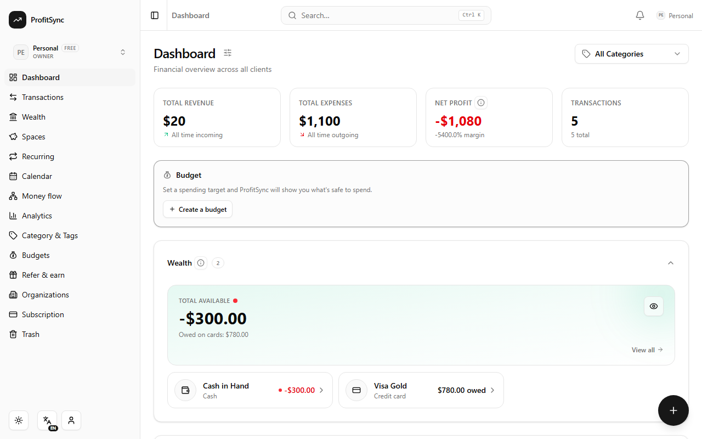
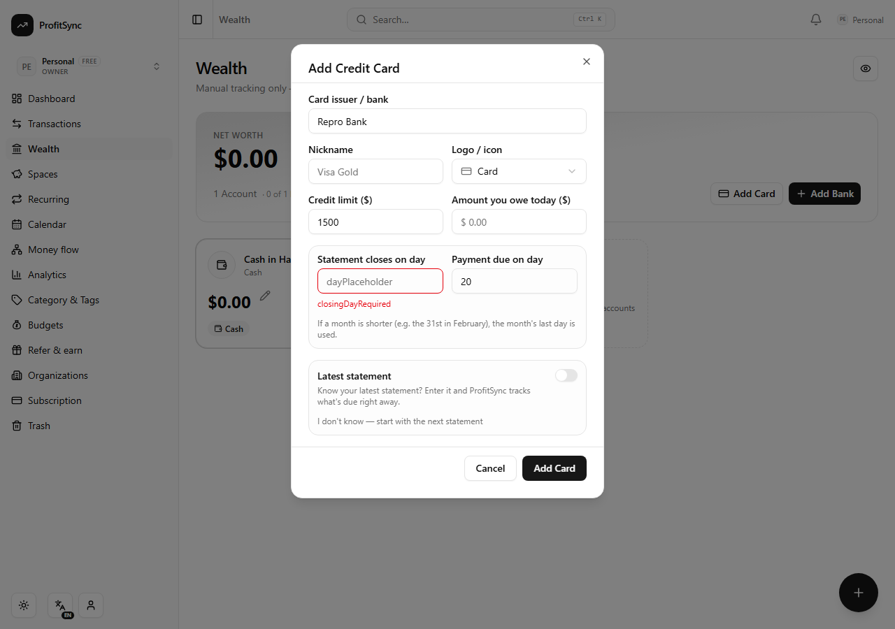

ProfitSync · engineering report · branch feat/credit-card-accounts · 4 September 2026
A credit card is now a first-class liability account. Buying with the card records an expense and increases the card's debt; paying the card is a transfer from a bank or cash account that reduces the debt and is never a second expense. Statements are tracked per billing cycle, with partial payments, refunds, fees, overpayments and full trash/restore/edit reversibility. Available credit is shown but never counted as money the user owns.
wealth_accounts) had type ∈ bank | cash | space and a stored current_balance that ten code paths mutate with relative SQL deltas. The sign lives in one place: balanceDelta(type, amount) in src/lib/wealth-ledger.ts (+incoming / −outgoing), reused on create, edit, trash, restore and purge.type ∈ incoming | outgoing, positive amounts, kind ∈ standard | transfer. A transfer is two legs sharing a group_id. is_system marks Opening Balance / Balance Adjustment rows, which define a balance and are never reversed through Trash.case when type = 'incoming' SQL. There was no refund concept outside Budget v2's provisional "same-category inflow" guess.current_balance stays the signed asset-equivalent value for every account type. A credit card's balance is therefore normally negative: −950 means "€950 owed". Only presentation reads the sign, through src/lib/credit-card.ts (cardDebt, cardCredit, availableCredit, creditUsage, signedBalanceFromDebt). No component writes a minus sign.Because of that single rule the existing ledger needed no special cases:
| Event | Ledger rows | Card | Bank | Expense | Income | Net worth |
|---|---|---|---|---|---|---|
| Buy €100 groceries with Visa | outgoing €100 on Visa | −100 | — | +100 | 0 | −100 |
| Pay €100 Intesa → Visa | transfer (out on Intesa, in on Visa) | +100 | −100 | 0 | 0 | 0 |
| Refund €100 to Visa | refund (incoming, kind='refund') | +100 | — | −100 | 0 | +100 |
| €10 annual fee | outgoing €10 on Visa | −10 | — | +10 | 0 | −10 |
| Overpay €150 on €100 debt | transfer | +50 (card credit) | −150 | 0 | 0 | 0 |
transactions.kind gains refund: an incoming row that gives money back for an earlier expense. Its balance effect is that of any incoming; reporting nets it against expense, never income. The rule exists once in JS (src/lib/tx-classify.ts) and once in SQL (api/_lib/tx-sql.ts). Every aggregate route imports the SQL twins, and a convention test fails if any route re-inlines the old expression.
credit_card_statements holds one row per closed cycle (closing_date, due_date, statement_balance, source ∈ computed | manual). Rows are filed lazily and idempotently when the card is read after a closing date has passed, or entered by the user when onboarding a card with a known statement.
Payments are never stored. Remaining = clamp(statement_balance − Σ incoming transfer legs dated after the close, 0, statement_balance). A later statement already includes older unpaid debt, so one payment reduces every statement it is dated after and the oldest reaches zero first — FIFO with no allocation table that could drift. Trash, restore and edit of a payment recompute deterministically. Post-close refunds are not payments (they post to the current cycle, like a real issuer). New-cycle spending is a separate, gross, historical figure; paying the card never "un-spends" it.
The balance at a close is reconstructed from the authoritative stored balance: debtAtClose = −(current_balance − movementAfterClose), using the same "effect currently applied" rule Budget v2 uses.
Fixed day-of-month settings (1–31) clamped at use: closing day 31 → Feb 28/29, Apr 30. The due date is the first matching day strictly after the close. UTC ISO strings throughout (same conventions as recurring.ts). Tested for 28/29/30/31, leap years including 2000 and 2100, and the year boundary.
| Change | Detail |
|---|---|
wealth_accounts | type='credit_card'; new nullable credit_limit, statement_closing_day, payment_due_day (CHECK 1..31). Existing bank/cash/space rows keep NULLs and are never reinterpreted. |
credit_card_statements (new) | FK cascade to account and org (factory reset and org deletion leave nothing behind); unique (wealth_account_id, closing_date) is the filing idempotency key. |
transactions.kind | Accepts refund (text column, no DDL). |
| Migration | drizzle/0062_credit_card_accounts.sql + journal entry. Applied to the local database and verified in information_schema. 0060–0062 are hand-written; drizzle-kit generate is out of sync with them (documented in CLAUDE.md). |
| Endpoint | Behaviour |
|---|---|
POST /api/wealth/accounts | type: "credit_card" with credit_limit, current_debt, statement_closing_day, payment_due_day, optional statement { balance, closing_date, due_date? }. Opening debt becomes a negative opening balance plus an outgoing Opening Balance system row (no expense, no budget spend). A known statement seeds a manual statement. |
PATCH /api/wealth/accounts/:id | Accepts current_debt (converted to the signed balance server-side), credit_limit, closing/due days. |
GET /api/wealth/accounts/:id/card | Owed / credit / available / utilisation, latest statement (paid, remaining, textual status), older statements, open cycle (spent, refunds, payments, closes on, next due). |
POST /api/wealth/transfer | Paying a card is this endpoint with the card as to_account_id; legs are labelled "Card payment to / from …". |
POST /api/transactions, /group, PATCH /:id | Accept kind: "refund" (must be incoming). A transfer leg refuses kind/direction/account edits. |
| Quota | New creditCards plan limit (free: 1 active, paid: 20 incl. closed), exposed by GET /api/wealth/quota. |








| Area | Effect |
|---|---|
| Budgets v1 | Spend predicates include refunds as negative spend (budgetSpendSignedAmount); card payments are transfers and never match. |
| Budgets v2 | A refund row counts as a confirmed refund in its category's envelope (catch-all included), never as a provisional guess; envelope detail lists refund rows. |
| Analytics · Money flow · Calendar · Transactions summary · Client totals | All use the shared aggregates: transfers count nowhere, refunds reduce expense, income excludes refunds. |
| Net worth | Σ signed balances (debt reduces it); a payment leaves it unchanged; available credit is never added. |
| AI quick add / voice | Schema gains kind, to_account_name, statement_payment; accounts are labelled by type in the prompt. "Paid 500 towards Visa from Intesa" → a transfer saved through the transfer endpoint. "Paid my Visa statement" → amount filled from the statement remaining and flagged for review. Quick-fill refuses to fill a transfer into the expense form. |
| Trash | Delete / restore / purge verified for purchases and payments. Fixed: restore only brought back the one leg whose id was passed, leaving the other leg of a transfer or split in Trash — restoring a card payment reduced the debt without re-debiting the bank. Restore now brings back every trashed leg of the group. |
| Persistence / factory reset | Statements cascade with the account; no change to resetOrgData or org teardown. |
| i18n | ~100 new keys in en.json, propagated to the other 7 locales with the repo's English-placeholder strategy (translations pending, per convention). |
| Native | Android synced (cap:sync:android), iOS bundle built and copied. |
| Suite | What it pins |
|---|---|
src/lib/credit-card.test.ts (32) | Sign convention, available credit, day clamping incl. leap years (2000, 2100), year boundary, due-date rule, open cycle, statement/new-cycle boundary, filing schedule, snapshot reconstruction, full / partial / multiple / excess / over payments, refund after close, two unpaid statements FIFO, onboarding with a manual statement, validation. |
src/lib/credit-card-ledger.test.ts (12) | In-memory ledger using the exact route helpers: purchase, payment, refund, fee, overpayment, delete/restore/purge of purchase and payment, edit 100→70, budget double-count, net worth, onboarding, no cross-account leakage. |
tx-classify.test.ts, api/_lib/tx-sql.test.ts, budget-spend.test.ts, budget-engine-refund.test.ts | Reporting rules in JS and SQL; convention check that no route re-inlines a type-only sum; Budget v1 predicates; Budget v2 refund netting. |
e2e/credit-card.spec.ts (9 scenarios) | Through the real UI, auth and database: create a card with a known statement → purchase → partial payment → full payment → refund → fee → overpayment → trash/restore/edit exactly once → reload; the paying account moved by exactly the payments. |
node scripts/secret-scan.mjs exit 0 node scripts/check-esm-extensions.mjs 228 files reachable — OK node scripts/boot-functions.mjs all functions boot under Node ESM node scripts/check-route-guards.mjs 125 handlers guarded npm run i18n:check 8 locales in sync npm run lint · npm run typecheck clean npx vitest run 64 files, 735 tests passed npm run build + chunk-cycle grep built; no charts-* in vendor playwright e2e/credit-card.spec.ts (local DB) 10/10 passed playwright e2e/smoke.spec.ts (regression) 9/9 passed npm run cap:sync:android · build:ios + cap copy OK
Full design notes: docs/credit-cards/CREDIT_CARDS.md. Handoff prompt for the reviewing agent: docs/credit-cards/HANDOFF_PROMPT.md.